01
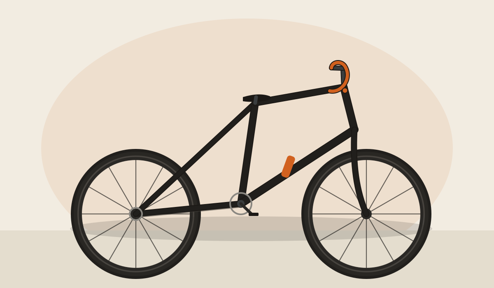
Argonaut Cycles
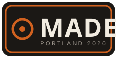
MADE 26The Handmade Bicycle Show
Three days of the best framebuilders in the world on a working shipyard by the Willamette. Steel, titanium, carbon, and a lot of very sharp brazing.
What is MADE
MADE brings together more than 300 independent builders under the gantry cranes of Zidell Yards. No mass-market booths, no e-bike wall of noise — just hand-built bicycles, the people who made them, and a river view.
Our editors walked every aisle over the weekend. These are the ten bikes we could not stop thinking about on the flight home.
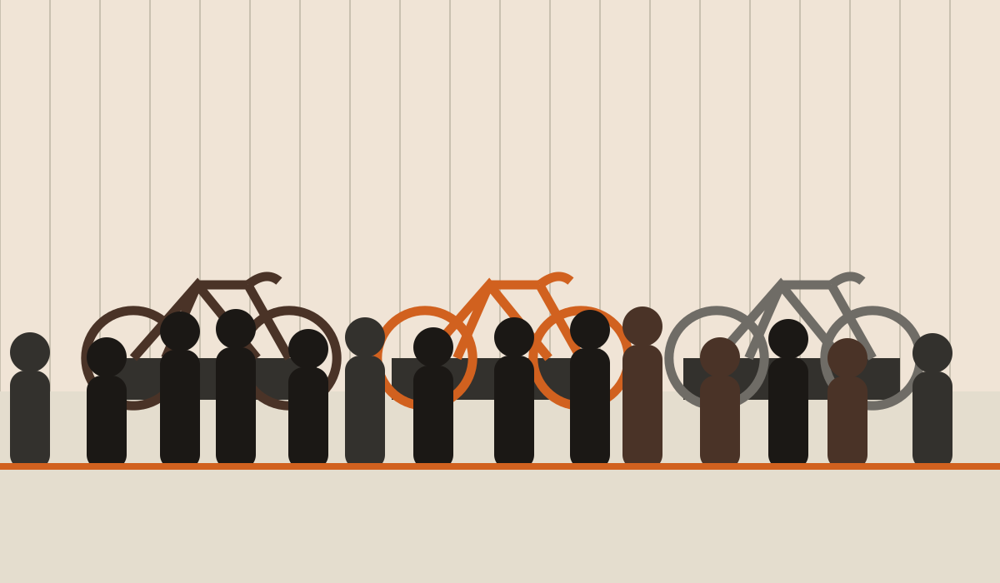
The list
Ranked, argued over, and finally agreed on. Tap any bike for the full story, the complete spec, and why it made the cut. On a bike page you can also use the ← and → arrow keys to move through the list.

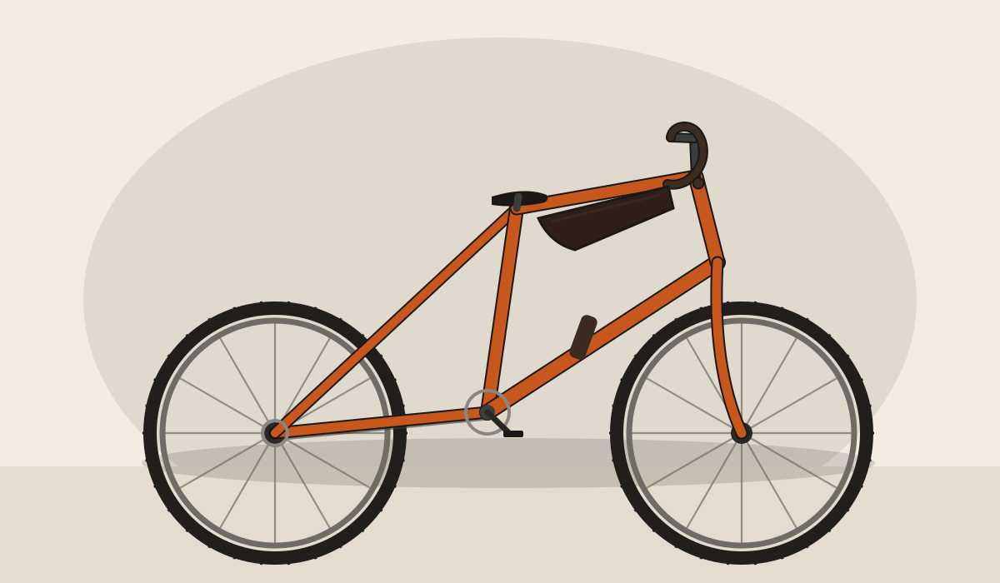
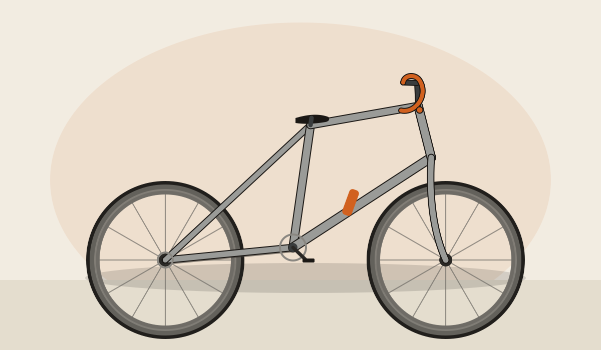
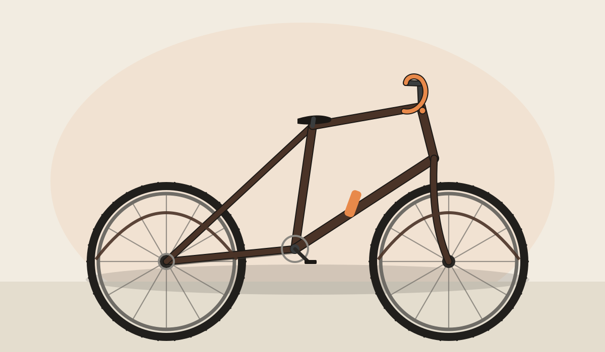
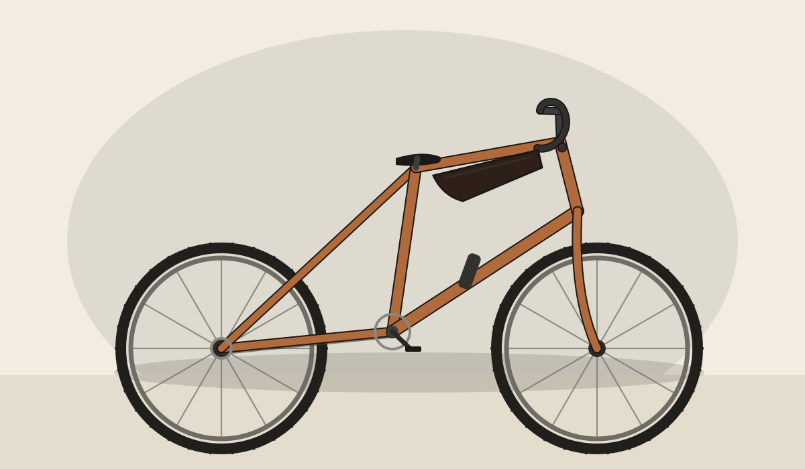
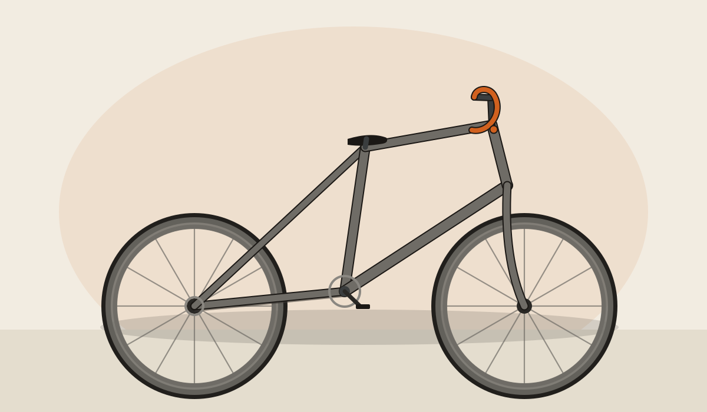
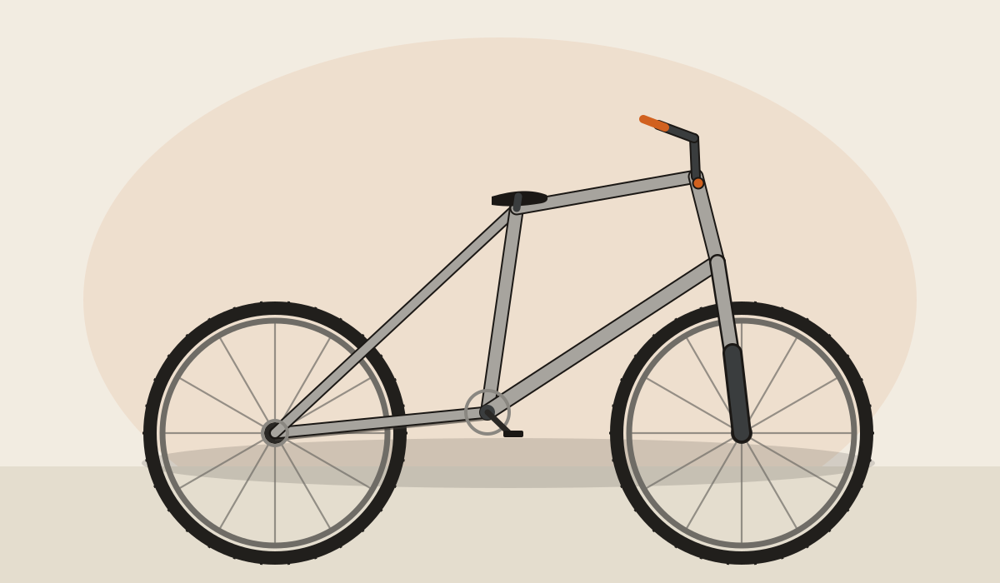
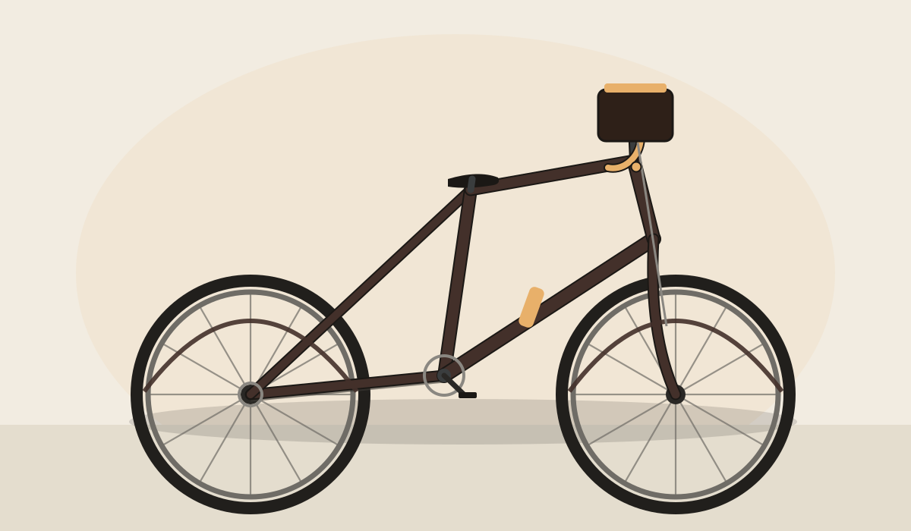
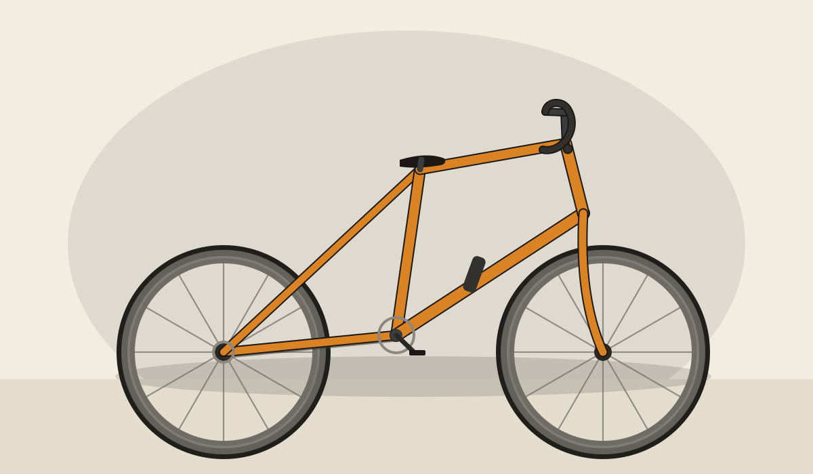
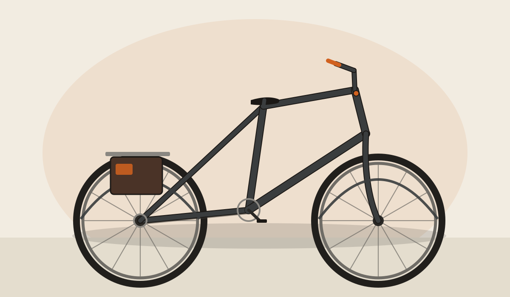
The show
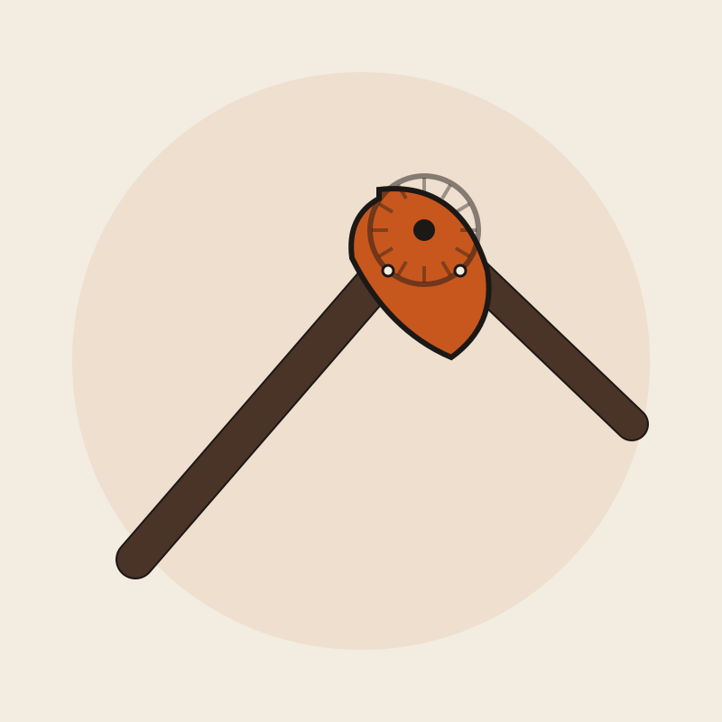
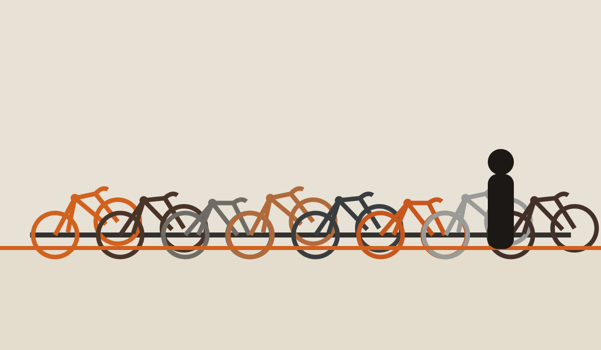
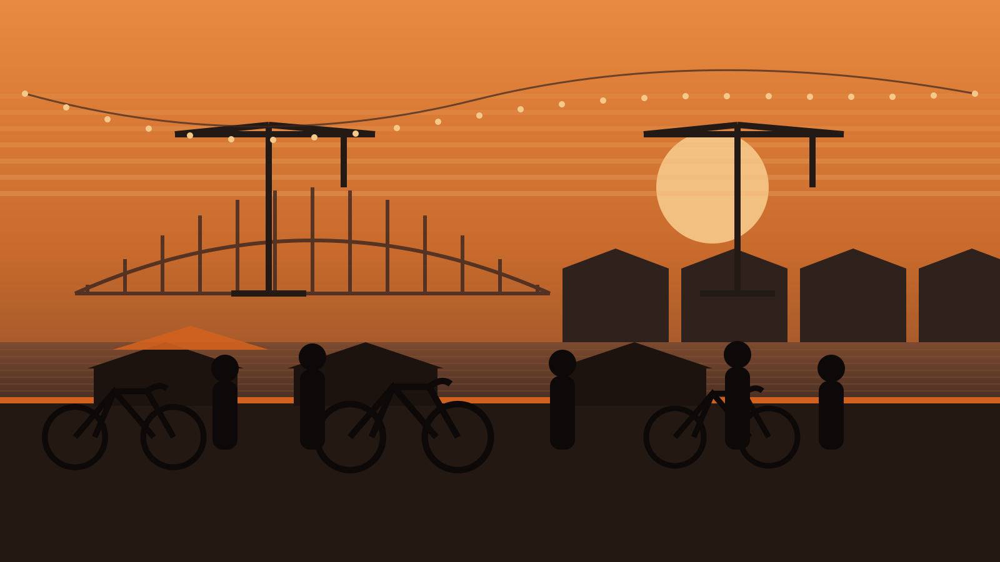
About MADE
MADE started as a reaction to shrinking industry trade shows: a place built for the small builder first, with the public invited in. It has grown into one of the largest gatherings of framebuilders anywhere, and it still runs on the same idea — put the maker next to the bike and let people ask questions.
The 2026 edition returns to Zidell Yards, an active barge-building site on the Willamette River, with demo rides, brazing demos, a framebuilding track, food carts, and a beer garden facing the water.
Visit
Doors open Friday afternoon for the preview and run all weekend. Come by bike if you can — there is a free, staffed valet at the entrance.
Friday, Aug 21 — 3:00–8:00 pm (preview)
Saturday, Aug 22 — 10:00 am–6:00 pm
Sunday, Aug 23 — 10:00 am–4:00 pm
Zidell Yards
3121 SW Moody Ave
Portland, Oregon 97239
MAX Orange Line to SW Moody & Gibbs
Weekend pass — $30 est.
Single day — $20 est.
Under 16 free · Builders & press comped